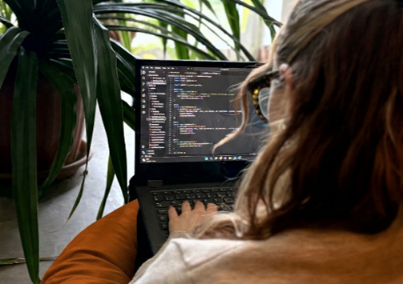

Meg
Roszkopf Adél Léna vagyok, az ELTE programtervező informatikus hallgatója. Szakmai utam során hazai és nemzetközi környezetben (Ghent, Belgium) egyaránt szereztem tapasztalatot full-stack fejlesztés és szoftvertesztelés területén, így magabiztosan mozgok multikulturális csapatokban is. Motivált és gyorsan tanuló fejlesztőként célom, hogy elméleti tudásomat és gyakorlati tapasztalataimat kihasználva innovatív digitális termékeket hozzak létre egy dinamikus csapat tagjaként.